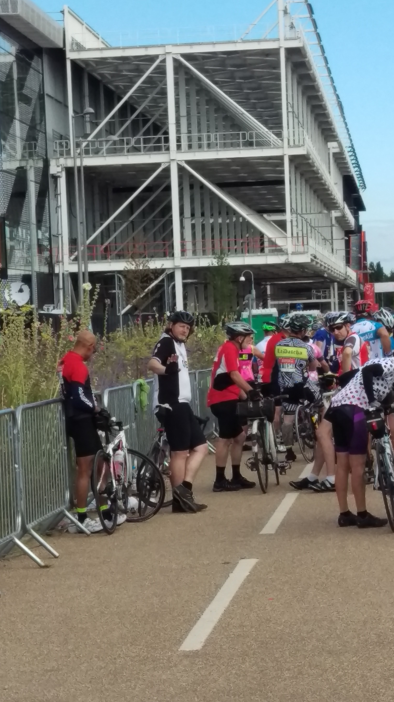

The Prudential Ride
RIDE: RIDE LONDON
Location: LONDON
WHEN: JUNE 2016
LENGTH: 100KM
DIFFICULTY RATING: HARD

The prudential ride London event is a 100km, closed roads route starting at the Olympic Park in Stratford and finishing on the mall. Thousands of cyclists turn up every year, and the full event, over the weekend includes a classic for the pros and a family ride in cenral London. I've partcipated as a volunteer (last time I got to be a human warning sign for a traffic island on the mens classic - gone in a blink!). This year we had decided to enter the 100km. Its further than our usal distance and included some famously tricky climbs including the Box Hill zig zag. We'd done some longer rides, and had been out into the Surrey countryside to practice the hills but as always went in knowing that we could have used more preparation!
-->